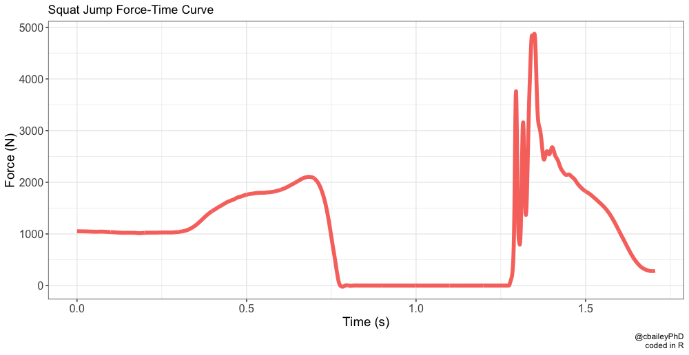
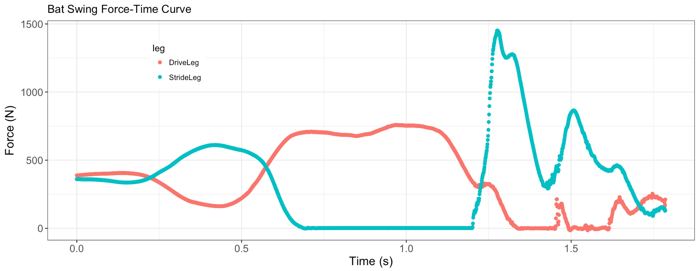

TOC
Similarities in Force-Time Curves
Monitoring of jumping ground reaction force (GRF), especially in the vertical direction (vGRF) is becoming more common these days with more affordable force plate options and software. If you are willing to learn and put in the effort, you can design your own force-time curve analysis programs in R or python and avoid the budget hit. Matt Sams created an open source vertical jump analysis project for this purpose, coded in R with a shiny app.
Jump monitoring is quite popular due to its quick and easy of collection that doesn’t cause excessive fatigue, but also due to its relationship with other performance variables (Carlock, 2004, Kale, 2009, Shalfawi, 2011, Stone, 2004). These relationships can be evaluated by Pearson’s r values and seen in scatter plots, but the similarities can also be seen by visual inspection of the force-time curve characteristics. Check out the images below of squat jump and snatch (from the knee) force-time curves plotted in R from a single Bertec 6040 force plate collecting at 1000 Hz.


If the snatch f/t curve wasn’t labeled, you might confuse if for a jump. To be clear these are not normalized for time, they just look that similar. If snatch was coming from the floor, it would look very similar to a CMJ with the countermovement added. It’s no surprise that we can find lots of statistical and practical relationships between weightlifting and jumping performance.
Collecting the Data
Getting on to the topic at hand and title of this post, while at LaGrange College, we collected jumps on a weekly basis for nearly 2 years with our baseball team. I was collecting these because baseball is a “strength/power” sport and vertical jumping ability is usually a good marker of power, but specific performance decreases may also be indicative of accumulated fatigue, giving it added utility for athlete monitoring. While considering the relationship between hitting performance and jumping ability, I realized that I didn’t really know what a bat swing f/t curve looked like. When I looked at studies on hitting vGRF, they don’t publish images of the f/t curves. So, I decided to make one. Actually, I planned a larger study along with it looking at asymmetry and ball exit velocity, but this is how it started.
At LaGrange we had a few force plates, and the portable biaxial PASCOs would worked best for this set up (model 2142). They sample up to 1000 Hz, you can move them around and building a platform around them like a batter’s box was fairly easy (an image and a gif of the setup below). In order to control for the variation of reacting to pitch location, they hit off of a tee and self-selected its height. The back leg (drive leg) force plate was stationary, but the platform was made so that the stride leg force plate could be adjusted for stride length and location (changes in x,y).


Bat Swing Force-Time Curve
Without further ado, the resulting force-time curve from the two force plates is below. On its own, the stride leg force-time curve looks similar to a jump, but the force magnitudes are lower. Keep in mind that the magnitude should be close to half the value, since we are dividing it over 2 force plates. That being said, at some point a weight shift will occur (DeRenne, 1993, Gola & Monteleone, 2001, Fortenbaugh et al., 2011, Mattingly & Rosenthal, 2007), which will result in similar force production values on a single force plate. With the weight shift in mind, it makes more sense to relate the drive leg to the propulsive phase of a jump and the stride leg braking phase to the landing phase of a jump.

GRF Analysis in R
If you are interested in how the GRF data were analyzed, you can find my code in part 2 of this post. The data were collected with PASCO’s Capstone software and files were exported as csv. Analysis took place in R to derive peak force, rate of force development (RFD), and impulse.
Reliability
Much like any other performance data that we monitor, reliability should be evaluated. Looking at the relative reliability in the form of the intraclass correlation 3,1, it’s not too bad. Depending on the reference you use, you might say all are acceptable values. But there is a noticeable trend that the stride leg values are less reliable than the drive leg values. Going back to an earlier comment on the similarities between the stride leg braking phase and the landing phase of a jump, this reliability finding is also consistent. Well, jump landings may be less reliable than the stride leg braking phase, but the trend is the same.
knitr::kable(ICC)
| Var | ICC |
|---|---|
| DL PF | 0.952 [0.888 - 0.383] |
| SL PF | 0.725 [0.474 - 0.891] |
| DL RFD | 0.685 [0.399 - 0.874] |
| SL RFD | 0.773 [0.550 - 0.912] |
| DL Imp | 0.904 [0.787 - 0.965] |
| SL Imp | 0.756 [0.522 - 0.904] |
Looking at our absolute measures of reliability (coefficient of variation), we see that RFD is not so reliable. Again, this is similar to jump data.
knitr::kable(CV)
| Var | CV |
|---|---|
| DL PF | 11.81% |
| SL PF | 12.6% |
| DL RFD | 37.77% |
| SL RFD | 44.88% |
| DL Imp | 12.36% |
| SL Imp | 14.67% |
Based on these findings, it may be worthwhile to collect data on peak force and impulse from a monitoring standpoint. But we should probably stay away from RFD and question the data we have from the the stride leg. While the stride leg reliability wasn’t terrible here, it was noticeably worse than the drive leg. Much like jump landings, poor reliability could kill our data or lead us to making an incorrect decision. We should regularly evaluate reliability at a minimum. Checking once and assuming it stays the same may not be acceptable in this case.
References
- Carlock, J.M., Smith, S.L., Hartman, M.J., Morris, R.T., Ciroslan, D.A., Pierce, K.C.,…(2004). The relationship between vertical jump power estimates and weightlifting ability: a field-test approach. Journal of Strength and Conditioning Research, 18(3), 534-539.
- DeRenne, C. (1993). High-tech hitting: Science vs. tradition. West: St. Paul.
- Fortenbaugh, D., Flesig, G., Onar-Thomas, A., Asfour, S. (2011). The effect of pitch type on ground reaction forces in the baseball swing. Sports Biomech, 10(4):270-279.
- Gola, M., & Monteleone, J. (2001). The complete book of hitting faults and fixes. New York: McGraw-Hill.
- Kale, M., Asci, A., Bayrak, C., & Acikada, C. (2009). Relationships among jumping performances and sprint parameters during maximum speed phase in sprinters. Journal of Strength and Conditioning Research, 23(8), 2272-2279. doi: 10.1519/JSC.0b013e3181b3e182
- Mattingly, D., & Rosenthal, J. (2007). Don Mattingly’s hitting is simple: The ABCs of batting .300. Griffin, NY: St Martin’s.
- Shalfawi, S. A., Sabbah, A., Kailani, G., Tonnessen, E., & Enoksen, E. (2011). The relationship between running speed and measures of vertical jump in professional basketball players: A field-test approach. Journal of Strength and Conditioning Research, 25(11), 3088-3092.
- Stone, M.H., Sands, W.A., Carlock, J., Callan, S., Dickie, D., … (2004). The importance of isometric maximum strength and peak rate of force development in sprint cycling. Journal of Strength and Conditioning Research, 18(4), 878-874.